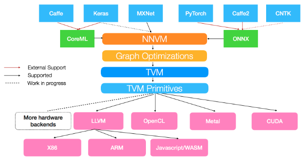

NNVM 探究
1. 前言：
2017年亚马逊推出了NNVM编译器。该编译器为深度学习而设计，主打网络层面编译，能够将前端框架的网络编译优化并使用TVM完成代码生成，从而能直接在后端硬件上运行。它支持的前端有MXNet, Caffe, Keras, PyTorch, Caffe2, CNTK等。

图1: NNVM框架图，图源在此
2. 使用：
虽然NNVM能够直接从深度学习框架编译计算图，我们也可以直接使用NNVM原生符号定义计算图，比如定一个卷积加ReLU的模块：
1 | def conv2d_block(data, name, channels, kernel_size=(3, 3), strides=(1, 1), padding=(1, 1)): |
这里面的sym.conv2d就是NNVM自带的符号，这个模块定义时，定义符号时使用的参数主要和图上节点有关，其写法和tensorflow很相近。完整的符号表可以参考这里。
定义好的网络可以由以下函数进行编译：
1 | output = single_net() |
首先经过nnvm.graph.create得到compute_graph，然后nnvm.compiler.build会根据这个计算图以及给定的图上参数编译整个计算图，生成的结果可以交给graph_runtime生成可运行模块，并运行。这里面graph_runtime来自于TVM，这里暂且不关注。本文中首先关注前两个函数做了什么。
3. 追踪
3.1 nnvm.graph.create
在Python中追踪这个函数，可以发现它实际上调用了C++的函数NNGraphCreate，其函数体非常短：
1 | int NNGraphCreate(SymbolHandle symbol, GraphHandle *graph) { |
基本上就是把给定符号的输出列表交给了新建的图，定义为图的输出列表。注意到我们使用nnvm.graph.create时传给它的就是整个计算图的最后一个节点，所以这里创建的图首先获得的是整个计算图的最后输出定义。
3.2 nnvm.compiler.build
追踪这个函数，首先进入nnvm/python/nnvm/compiler/build_moduole.py中的build函数，将这个函数分成不同的部分进行讲解：
Part I
1 | target = target if target else tvm.target.current_target() |
第一部分是创建target，一般传入的target是个字符串，如opencl -device=intel_graphics,llvm -mcpu=skylake-avx512等，然后调用target.create根据字符串创建target，这个创建过程中，会将opencl这种称作target_name，-device=后的内容称作device_name，此外还可以传入多个option，记录在options_array中。
Part II
1 | # If current dispatch context is fallback context (the default root context), |
第二部分代码涉及到了autotvm，这是TVM用于调优代码的部分。这里通过上面得到的target名字来寻找调优好的参数。TVM官方提供了一部分预先调好的优化参数，存放在一个缓冲目录中，如果你恰巧在对应设备上使用了对应的运算，那么就可以直接复用参数。一般来说，这些参数会存放在~/.tvm/tophub/下，比如笔者的该目录下存放有cuda_v0.04.log，llvm_v0.03.log两个文件，打开cuda_v0.04.log，可以看到:
1 | # This is the pre-tuned parameters for cuda backend |
这里注明了，该文件是编译TVM时自动下载的，文件内容的前几个条目都是在titanx上调优二维卷积的结果，对应的卷积输入大小也写明了。
tophub_context会加载这些文件保存起来，留着后续使用。接下来所有的操作都会在tophub_context的scope中进行(with tophub_contex:)。
Part III
1 | shape = shape if shape else {} |
这里会检测传进来的graph是否已经是Graph数据结构，如果不是，则重复一下nnvm.graph.create的工作，_update_shape_dtype会根据传进来的参数params纠正shape和dtype(必要时报错)。
Part IV
1 | # correct layout if necessary |
进行layout检查和纠正，以及初始化。这里就先略写了。
Part V
1 | with target: |
这里进行了一些优化，跟踪进optimize函数：
1 | cfg = BuildConfig.current |
可以看到AlterOpLayout部分做的事情和前面的部分几乎一样，这里总是会询问cfg.pass_enabled，而cfg.pass_enabled会查看自己的add_pass属性是否记录了当前优化，如果有则实施优化，否则会查看自己的优化层次数opt_level，如果不小于当前的优化层次，也会实施优化。cfg的默认设置是"opt_level": 2, "add_pass": None，而AlterOpLayout对应的opt_level=3，所以这一分支一般不会进入，除非用户指明了新的opt_level。
1 | OPT_PASS_LEVEL = { |
而SimplifyInference则是一定会执行的优化阶段，通过graph.apply函数，可以将优化pass作用在graph上。跟踪SimplifyInference，在nnvm/compiler/simplify_inference.cc中找到了对应函数，可以看到主要对两个算子进行简化优化：batch_norm和drop_out。对于batch_norm，主要是将batch_norm(data)形式的计算变化成scale * data + shift的形式，这样做的理论根据是：TVM只面向inference，所以不像training时需要完整地做完batch normalization的所有操作，有时候batch size甚至是1，计算就更加简便了，在这篇博客中也讨论了这一点。对于drop out，则是直接丢掉。
最后是FoldScaleAxis优化，在Relay论文中介绍了这个优化，其主要思想是将卷积操作前/后的常量乘法尽量挪进固定参数中，这样可以支持一些特殊设备(比如做不了标量运算的加速器)。NNVM中实现的算法大致也是这个思路。
Part VI
1 | # Clear extra params without nodes. |
这里主要做清除冗余参数，也选择略写了。
Part VII
1 | # Operator Fusion and generation |
这里进行了很关键的两步：fusion和compilation。
对于图融合，首先寻找可合并的区域(GraphFindFusibleGroups)，这一步会将图分割成多个区块，每个区块将独自被编译成一个算子；随后进行图融合(GraphFuse)。
在NNVM中定义了不同算子的合并模式(pattern)，包括:
1 | enum OpPatternKind { |
算子在被定义的时候，就已经被打好了标签属于哪类模式，比如二维卷积的pattern就在nnvm/python/nnvm/top/nn.py中被定义为kOutElementwiseFusable: reg.register_pattern("conv2d", OpPattern.OUT_ELEMWISE_FUSABLE)。
此外，在NNVM中还定义了不同的合并规则(rule)，包括:
1 | // The single fuse rule. |
在进行fuse的时候，先把整个计算图按照后序深度遍历进行拓扑排序，处理时按照从图的输入节点开始的顺序，保证每个被处理的节点的输入节点先于它本身被处理。
接下来描述fuse的算法
在fuse过程中，引入一个概念叫master node, 每个节点都会有自己的master node。
第一步：确定fuse规则。
遍历拓扑排序后的节点序列:
- 对于网络参数，对应的规则都是
kRealize。 - 当前节点n的pattern如果是
kElemWise或者kBroadcast，则看其输入节点(inputs属性):
如果有输入节点e仍然没有确定如何fuse(kUknown)，则看e的pattern：- 如果e的pattern是
kElemWise或者kBroadcast，则确定其fuse规则为kFuseToMaster - 如果e的pattern是
kInjective,也确定其fuse规则是KFuseToMaster - 如果e的pattern是
kOutEWiseFusable，且n还没有确定自己的master node，且shape_vec[idx.entry_id(nid, 0)] == shape_vec[idx.entry_id(e)](这一条件还没有看得太明白，目前的理解是n的第一个输出张量的shape与e的输出中被n使用的那个张量的shape一致时)，就将n的master node确定为e的master node且设置e的fuse规则为kFuseToMaster - 其余情况，一律将e的fuse规则设置为
kRealize
- 如果e的pattern是
- 当前节点n的pattern如果是
kInjective或者kCommReduce，则看其输入节点，对于没有确定fuse规则的节点，只要其pattern是kElemWise或者kBroadcast，就把其规则设定为KFuseToMaster，否则设置为kRealize。如果n的pattern是kCommReduce，那么他自己就是自己的master node - 剩下的情况，n的master node就是自己，且其所有未确定fuse规则的输入节点的fuse规则都设置为
kRealize
用一个小例子说明上述过程，这个例子来自NNVM源代码的注释:
1 | conv2d |
这里面除了卷积，其它的都是element-wise操作。那么首先，遍历顺序是[conv2d, op1, op2, op3, add]，conv2d属于kOutEWiseFusable,所以进入第4个情况，以自己为master node。op1-3情况相似，都会进入情况2的第三点，将conv2d看作master node, 且设置conv2d的fuse规则为kFuseToMaster; 对于add，会设置op1-3的fuse规则为kFuseToMaster，但是其自己没有子节点，不会被子节点设置，且master node不确定，算法中有处理这种节点的逻辑，这里没有详细陈述，只说明结果是master node为自己，fuse规则为
kRealize。
第二步：根据fuse规则建立group，这里会根据kFuseToMaster从输出节点向上传播group id，但是对于pattern为kOutEWiseFusable的节点，不会向上传播group id，对上面的例子，结果就是conv2d自己一个group，其余节点一个group。
第三步：每个节点如果自己的输出张量被多个节点用了，且这些子节点都在一个group且他们的pattern都是kElemWise或者kBroadcast，那么该节点会加入子节点的group，成为这个group的master，对上述例子，所有节点都会进入一个group，以conv2d为master node。
至此已经标记了所有的group和master node。后续工作是根据标记结果，对每个group生成一个子图。生成代码的单位是子图，对于子图代码生成的探究将后续进行，这里就不详细说明了。
Part VIII
1 | # Write variable initial values into params |
最后返回。